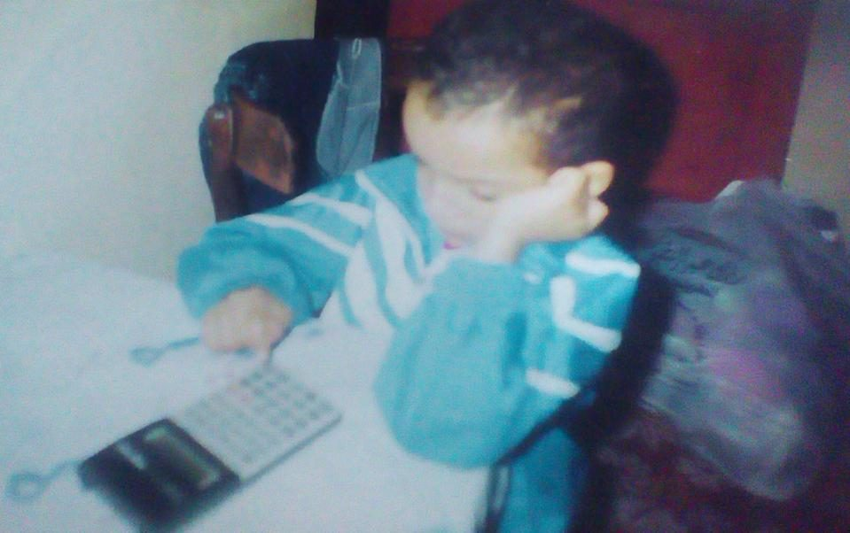
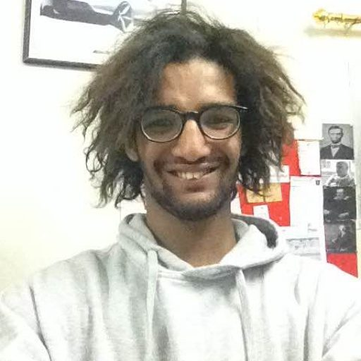

Personal archive / chemistry, history, and life
Before the
research.
There was
curiosity.
I have always wanted to know where things came from. That impulse took me to chemistry to understand material causes and to history to understand the origins of knowledge. These photographs trace some of the places, people, and experiments encountered along the way.
Photographs and short film · dated where possible


Some images record the work of science, others the friendships, lessons and events around it. Together, they help explain the story behind the publications.
01 / Visual record
A gallery of
beginnings.
Dates are transcribed from the original Google Photos display when present. They describe the source archive's date labels, not independently established event dates. Undated photographs are marked accordingly.
02 / Moving image
A short experimental recording.
A brief close-up recording preserved in the personal archive. The source MOV file contains a creation timestamp of 25 December 2016. The timestamp does not, by itself, establish exactly when the experimental activity took place or identify the specimen.
5.5 seconds · silent, web-optimized copy · source: IMG_8225.MOV
On dates and context
The most useful archive is one that does not invent certainty. The 2014 portrait has a filename indicating November 2014, but no embedded original capture date. One childhood photograph was preserved in a file named April 2015; that does not mean the childhood scene was photographed then. Likewise, many images here were recovered from 2026 screenshots of an earlier Google Photos archive: the displayed date belongs to the archive interface, not necessarily to the photographer's original camera metadata. Captions remain provisional where the precise event cannot be independently verified.
The research illustrations and published scientific results belong on the research portfolio; this personal visual archive is intentionally kept separate from experimental evidence.